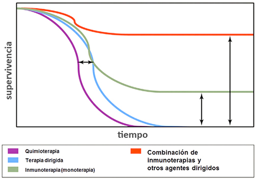

ICO 24h
MÓDULO 5 : Urgencias relacionadas con la inmunoterapia oncológica
5.1.3 Impacto en la supervivencia
Si bien la inmunoterapia no es efectiva en todos los pacientes, existe un subgrupo que cuando alcanzan una respuesta significativa, esta puede mantenerse durante largos periodos de tiempo. Esto ha permitido que actualmente podamos ver algunos pacientes afectos de tumores de muy mal pronóstico, que podrían ser largos supervivientes.
Este hecho obliga a modificar el enfoque en el manejo de los pacientes tratados con inmunoterapia, pues el pronóstico de la enfermedad es más favorable y el paradigma del nivel de intervención ha cambiado.
Curva de supervivenciaRepresentación de la curva de supervivencia con agentes genómicamente dirigidos (línea azul) en comparación con la quimioterapia estándar (línea morada), lo que indica una mejora en la supervivencia global, pero falta de respuestas duraderas; mejora de la supervivencia global media y las respuestas duraderas en una fracción de pacientes tratados con terapia de control inmunológico (línea verde); posibilidad de mejora la supervivencia global con respuestas duraderas para la mayoría de pacientes en el contexto de tratamiento combinado con agentes genómicamente dirigidos y terapia de control inmunológico (línea roja).

5.1.4 Aspectos generales de la toxicidad
- Diferencias con quimioterapia : en la mayoría de los estudios comparativos, se ha demostrado que la tolerancia a la inmunoterapia es mejor que la que estamos acostumbrados a ver con los quimioterápicos clásicos. Los efectos adversos inespecíficos y comunes a ambos grupos de fármacos, suelen ser de mucha menor intensidad con los inmunomoduladores (astenia, anorexia, artromialgias, toxicidad hematológica). Cuando son leves o moderados, se suelen manejar bien con analgésicos y antiinflamatorios (paracetamol, AINEs); cuando son graves, requieren la administración de corticoides sistémicos, habitualmente por vía oral.
- Efectos adversos inmunomediados : existen una serie de efectos adversos que son el resultado de un mecanismo inmunológico que de manera exagerada activa la cascada de la inflamación y que puede ocurrir a nivel de cualquier órgano (en inglés, immune-related adverse events o irAE). Los más frecuentes son los dermatológicos, gastrointestinales, endocrinos, pulmonares y hepáticos. Otros menos frecuentes son: musculoesqueléticos, renales, neurológicos, oculares, cardiovasculares.